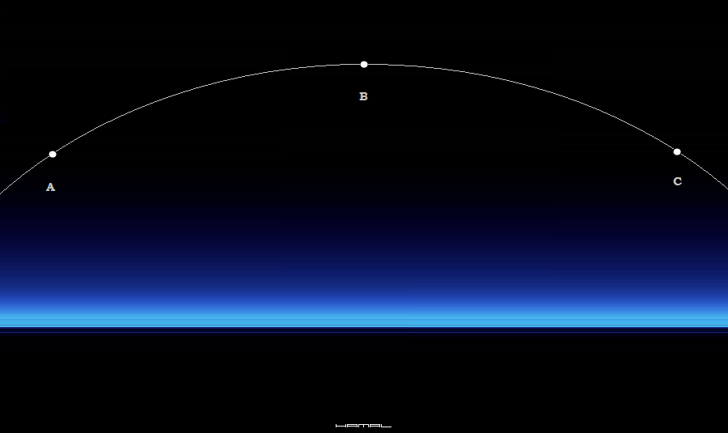
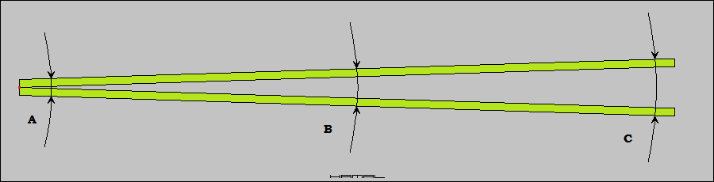
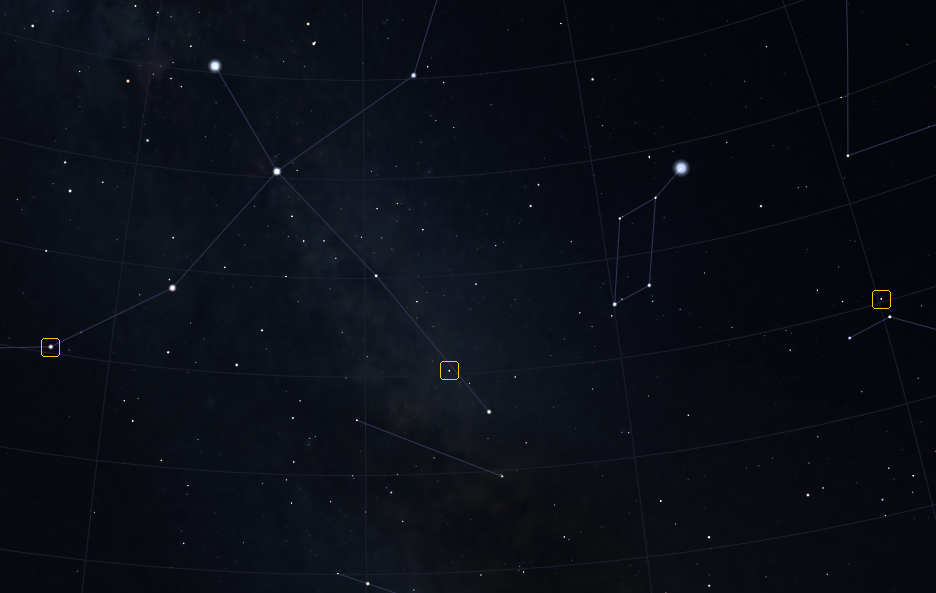
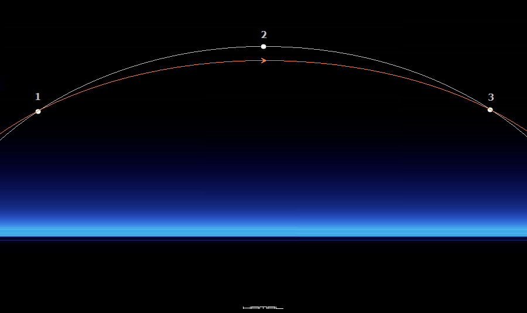
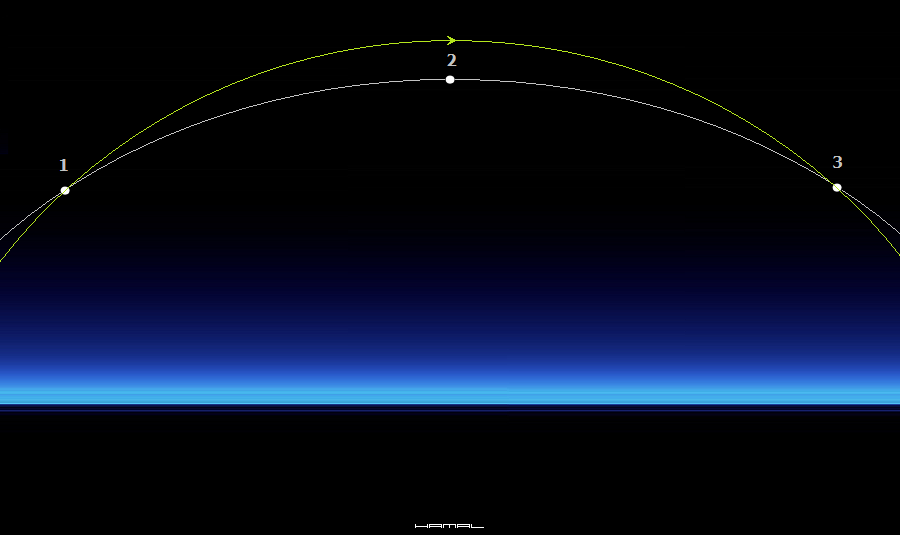
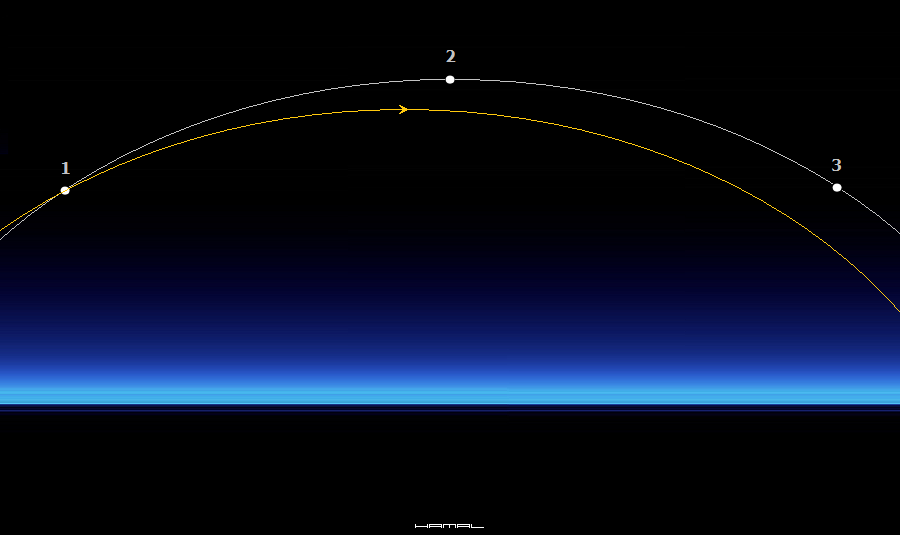
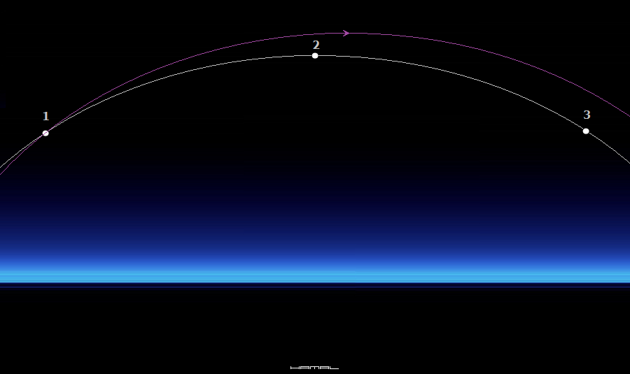

.
SPOSÓB NA SZYBKIE I DOKŁADNE USTAWIENIE MONTAŻU
|
Na początek, czemu Klasyczna Metoda Dryfu służy. Klasyczna Metoda Dryfu służy prawidłowemu ustawieniu montażu paralaktycznego, platformy paralaktycznej, astro koziołka, bądź innego urządzenia rekompensującego ruch obrotowy ziemi, celem umożliwienia wykonywania nieporuszonych zdjęć, poruszających się, obiektów astronomicznych. Polega ona, na wycelowaniu sprzętu fotografującego w gwiazdę na niebie, i obserwowaniu, czy zaczyna ona nam uciekać/dryfować z kadru, a jeśli tak, to po sposobie, w jaki to robi, próbujemy wykombinować, z jaką niepoprawnością ustawienia montażu mamy do czynienia. Wyposażeni w tabelkę analizujemy przypadki: Jeśli gwiazda na wschodzie, ucieka do góry, to należy opuścić trochę zachodnią nogę wschodniej części montażu itd... godzinka, albo dwie, mija. Ja oczywiście ubarwiam z lekką dawką ironii, co jednak nie zmienia faktu, iż mniej więcej tak to wygląda, a wiem, o czym piszę, bo setki razy na polu te czynności wykonywałem. Zacznijmy jednak od początku... . Kula Ziemska obraca się w lewo, gwiazdy więc, będąc nieruchomymi na nieboskłonie, pozornie przemieszczają się w prawo, podobnie jak ściany pokoju i meble kiedy, gdy na krześle obrotowym obracamy się w lewą stronę. Na domiar złego, gwiazdy te nie przemieszczają się po linii prostej, lecz po łuku, ponieważ my, jako obserwator nie znajdujemy się na równiku, lecz w Europie. Zadaniem montażu zatem jest, nasze obracanie się w lewo zrekompensować tak, aby obraz gwiazd był pozornie nieruchomy, a w odniesieniu do poniższej grafiki, jest zacząć fotografować gwiazdę w punkcie A, aby po np. 3 godzinach fotografowania, gdy gwiazda znajdzie się w punkcie B, mieć ją nadal w tym samym miejscu w kadrze na zdjęciu, mało tego, po kolejnych np. 3 godzinach, gdy gwiazda będzie w punkcie C, nasz zestaw fotograficzny winien nadal mieć ją w tym samym miejscu w kadrze na zdjęciu. 
Ale jak wiadomo, uzyskać tak doskonałe ustawienie montażu nie jest łatwo. Do doraźnego ustawienia montażu można wykorzystać lunetkę polarną, jednakże często się okazuje, że nie jest to wystarczająca metoda, więc w ramach doprecyzowania, stosuje się metodę dryfu. I jak wspomniałem wcześniej, po wycelowaniu w gwiazdkę w punkcie A i obserwowaniu, czy przemieszcza się ona po założonym torze... okazuje się, że gwiazdka zaczyna nam uciekać z kadru... i zaczyna się kombinowanie. Czy skoro mam teleskop, który obraca obraz do góry nogami, a kamerkę mam włożoną do wyciągu też do góry nogami, jednak mam ustawione w programie rotate 180 stopni, to fakt, że gwiazdka ucieka mi do góry, to oznacza, że ....?!?! :) Klasyczna metoda dryfu ma też inną wielką wadę, gdyż biorąc pod analizę tyci wycinek drogi/czasu próbujemy ustawić montaż na kilka godzin trasy. To tak, jakby wziąć dwie 10 metrowe listwy, połączone na jednym końcu zawiasem (patrz grafika poniżej), i dokonując tuż przy zawiasie (w punkcie A) pomiaru ich rozstawu, próbować precyzyjnie ustawić szerokość rozwarcia z dokładnością do mm na ich końcach (C). Przecież, jeśli w punkcie A, pomylicie się o 1mm, to na końcach listew w punkcie (C) objawi to się różnicą w centymetrach. Nawet jeśli błąd w (A) wyniesie 0.1mm to i tak na końcach tak długich tyczek przełoży się to na spore odstępstwa. A ja proponuje coś innego, mianowicie, "weźmy miarę i idźmy na rozwarte końce listew" i tam dokonajmy nastawu. Tym metoda semidryfu jest.  Powiecie OK, ale jak to się ma do montażu? Rzecz polega na tym, że dana gwiazda znajdująca się w punkcie A, po kilku godzinach minie punt B i dotrze do punktu C, ale o tym już było. Jednak, w chwili, gdy nasza dana gwiazda znajduje się w punkcie A, aby sprawdzić poprawność ustawienia montażu, nie trzeba czekać, aż po kilku godzinach dotrze ona do punktu B a po wielu więcej do punktu C, Wystarczy poszukać w atlasie, lub Stellarium, innych gwiazd o tej samej deklinacji co nasza gwiazda, i natychmiast dokonać sprawdzenia ustawienia montażu.  Jeśli po ustawieniu montażu i wycelowaniu centralnie w gwiazdę nr1, poluzowaniu osi Ra i przejściu do gwiazdy nr2 dostrzegamy ją centralnie w okularze, a następnie, po przejściu do gwiazdy nr3, również mamy ją centralnie w okularze, posiadamy dokładnie ustawiony montaż. Zajęło nam to 3 minuty a uzyskaliśmy dokładnie ten sam efekt, co gdyby czekać, aż nasza gwiazda nr1 z punktu A przejdzie po 3h do punktu B i kolejnych 3h do punktu C. Przy źle ustawionym montażu, po wycelowaniu w gwiazdę nr1 i pojechaniu do gwiazdy nr2, lub nr3, będą one przesunięte w okularze, lub nie będzie ich w ogóle, z powodu tego, że montaż porusza się inną trasą niż nieboskłon i gwiazdy uciekły nam daleko z pola widzenia zestawu. Teraz poniżej będą przykłady typowych błędów ustawienia. Dla uproszczenia będę używał zwrotów góra - dół, prawo - lewo Szara linia na grafice, to trasa, po jakiej porusza się dana gwiazda, jest też ona wysokością deklinacji o tej samej wartości, na tej linii znajdą się wszystkie gwiazdy mające identyczną deklinację (czyli w uproszczeniu wartość góra dół) Kolorowe linie na grafice, to trasa, po której porusza się nasz montaż z danym ustawieniem, od strony lewej, do prawej. 1. Gdy montaż jest prawidłowo ustawiony na boki (prawo-lewo), lecz jest za mało odchylony do tyłu, od gwiazdy nr1 trafi do gwiazdy nr3, ale nie trafi w gwiazdę nr2, przejdzie pod nią. 
2. Gdy montaż jest prawidłowo ustawiony na boki (prawo-lewo), lecz jest za bardzo odchylony do tyłu, od gwiazdy nr1 trafi do gwiazdy nr3, ale nie trafi w gwiazdę nr2, przejdzie nad nią. 
3. Gdy montaż jest za bardzo ustawiony w lewo, zupełnie utraci prawidłową trasę, zejdzie pod nią. 
4. Gdy montaż jest za bardzo ustawiony w prawo, zupełnie utraci prawidłową trasę, wejdzie nad nią. 
Zauważcie, że mając montaż ustawiony jak w ostatnim przykładzie, natychmiast ustaliliśmy, że montaż jest totalnie "przekoszony", a próbując to ustalić metodą dryfu, na całą procedurę byśmy zmarnowali sporo czasu. Celowanie w gwiazdkę, puszczenie ekspozycji, aby po pewnym czasie stwierdzić, że gwiazdy wieją nam jak szalone, po dokonaniu wielu poprawek, i znowu straconym czasie na naświetlanie klatek, drapiemy się w głowę i wypowiadamy niecenzuralne zwroty ;) Metoda opisana powyżej, jak każda inna, wymaga wprawy, ale opanowana, pozwoli Wam oszczędzić czas przy rozstawianiu sprzętu, gdzie w naszym klimacie, każda sekunda czystego nieba jest na wagę złota. 
|